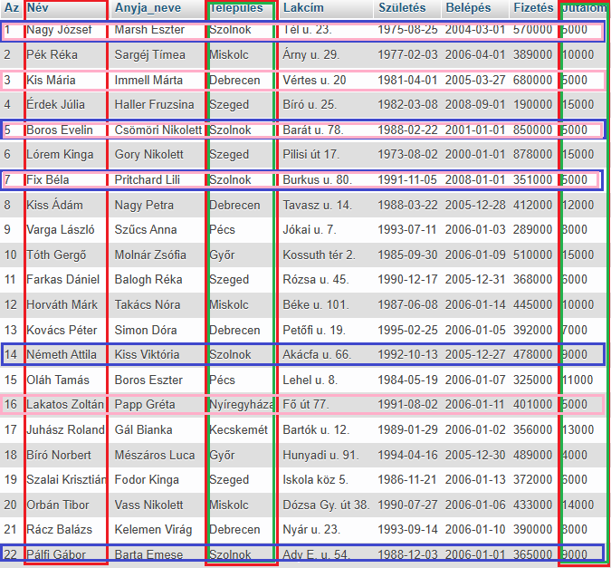
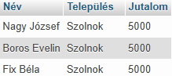
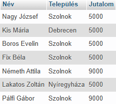

A WHERE utasítás tartalmazhat egy vagy több AND operátort.
Az AND operátort a rekordok egynél több feltétel alapján történő szűrésére használják.
A visszaadott adatokat egy eredménytáblában, az úgynevezett eredményhalmazban tárolja a rendszer.
SELECT Név, Település,
Jutalom
FROM dolgozók
WHERE Település = "Szolnok"
AND Jutalom = 5000;


Látható, hogy az eredménytábla a kiválasztott mezőkből áll.
Az AND-t tartalmazó kifejezés két részből áll: Település = "Szolnok" valamint Jutalom = 5000.
Azokból a sorokból (rekord) jön a megoldás, ahol mind a két szín jelen van, azaz ha mind a kettő állítás igaz!
A WHERE utasítás tartalmazhat egy vagy több OR operátort.
Az OR operátort a rekordok egynél több feltétel alapján történő szűrésére használják.
A visszaadott adatokat egy eredménytáblában, az úgynevezett eredményhalmazban tárolja a rendszer.
SELECT Név, Település,
Jutalom
FROM dolgozók
WHERE Település = "Szolnok"
OR Jutalom = 5000;

Látható, hogy az eredménytábla a kiválasztott mezőkből áll.
Az OR-t tartalmazó kifejezés két részből áll: Település = "Szolnok" valamint Jutalom = 5000.
Azokból a sorokból (rekord) jön a megoldás, ahol legalább az egyik szín jelen van, azaz ha legalább az egyik állítás igaz!